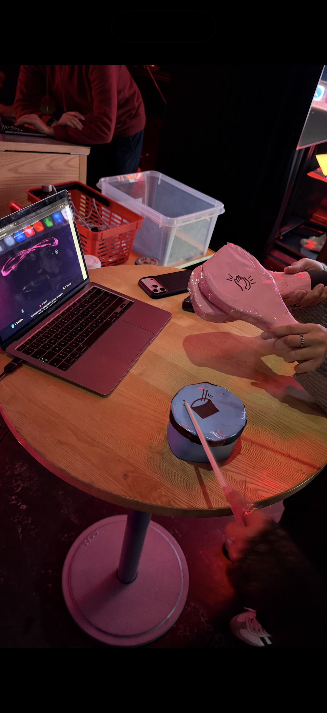
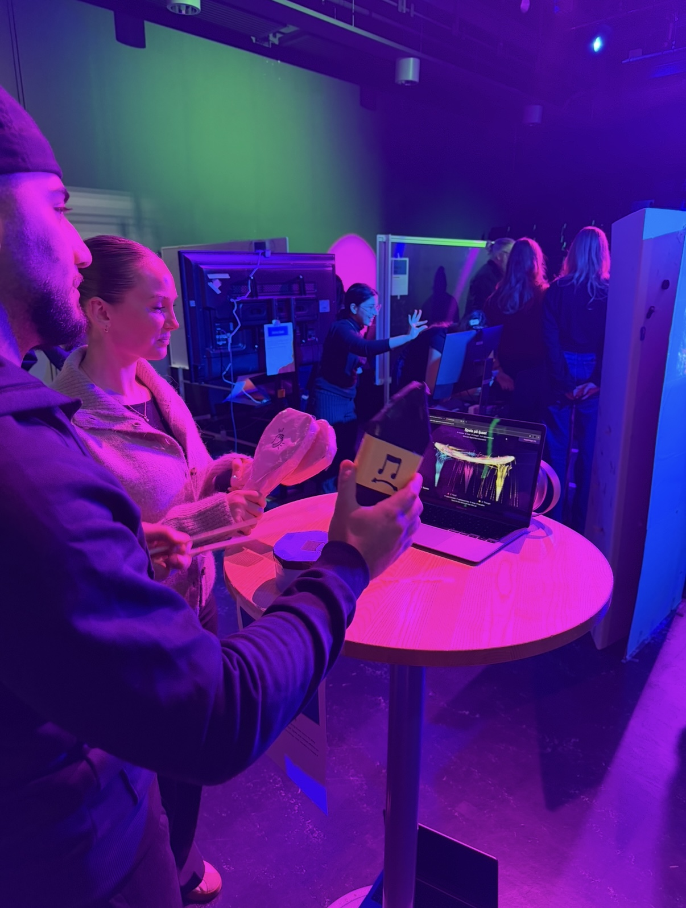
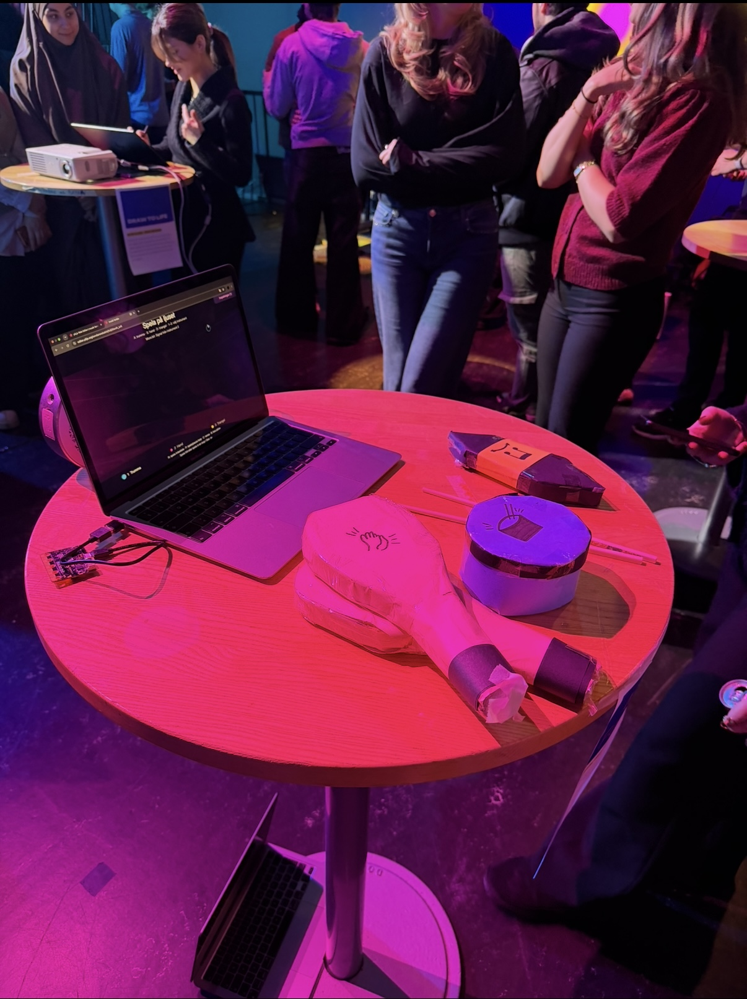
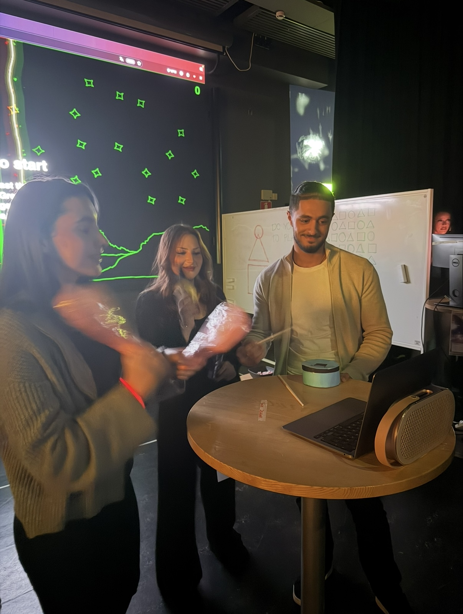
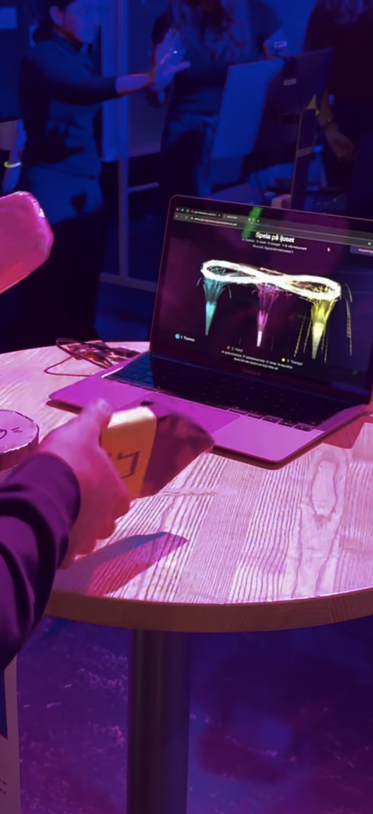

The Music Fountain
Created by Sevda Nowbakht and Joud Anis
About the project
The Music Fountain is an interactive installation where people make music and light together. It has three instruments with micro:bits that send signals to a computer. Each instrument plays a different sound and sends a fountain of coloured light up the screen.
When people play together, their fountains meet and form a moving pattern. The neon colours and techno sounds give the installation a rave feel. Players can add a bassline, record their music and listen back to what they made.
About us
We’re Sevda Nowbakht and Joud Anis, two students at Södertörn University. We created The Music Fountain together for our creative programming course. We wanted to see how sound and light could make it fun for people to play music together.
Project gallery




